Co-Located with:ICSE26
Co-Located with:ICSE26
 Date:
Tuesday, April 14 2026
Date:
Tuesday, April 14 2026
 Location:
Rio de Janeiro (Brazil)
Location:
Rio de Janeiro (Brazil)
 Submission (Extended):
Submission (Extended):
October 27, 2025
Co-Located with:ICSE26
Date:
Tuesday, April 14 2026
Location:
Rio de Janeiro (Brazil)
Submission (Extended):
The engineering of green software-intensive systems is critical in our drive towards a sustainable, smarter planet. The goal of green software engineering is to apply green principles to the design and operation of software-intensive systems. Green and self-greening software systems have tremendous potential to decrease energy consumption. Moreover, software can and should be re-thought to address sustainability issues using innovative business models, processes, and incentives. Monitoring and measuring the greenness of software is critical towards the notion of sustainable and green software. Demonstrating improvement is paramount for users to achieve and effect change. Analysis of the sustainability of a specific software system requires software that aids developers in weighing the four dimensions of sustainability---economic, social, environmental, and technical---with their attendant trade-offs. The software engineering community must assume leadership in this important challenge. In this workshop, we will explore the theme of “green software engineering for software sustainability” with a goal towards creating actionable outcomes that will affect how software engineering is practiced and taught in the future, in order to help organizations prioritize their sustainability objectives.
GREENS 2026 seeks contributions addressing, but not limited to, the following topics related to sustainable software systems and green software engineering:
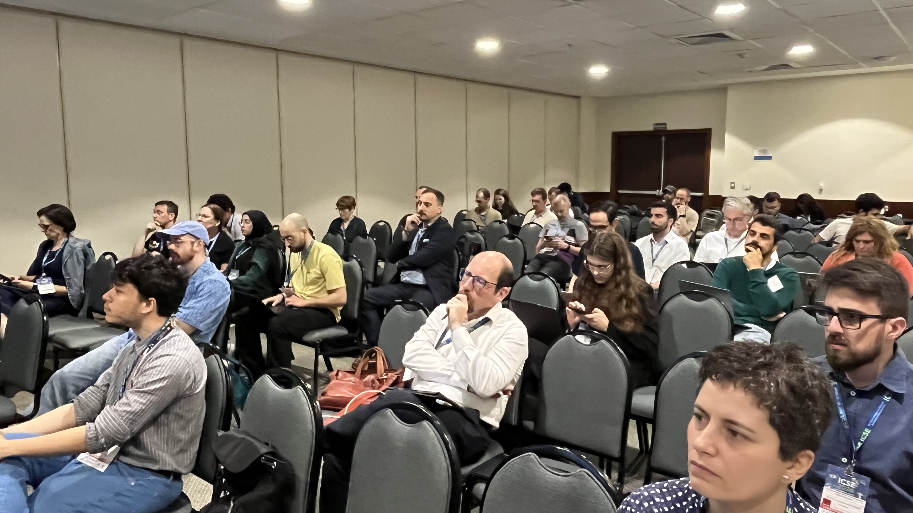
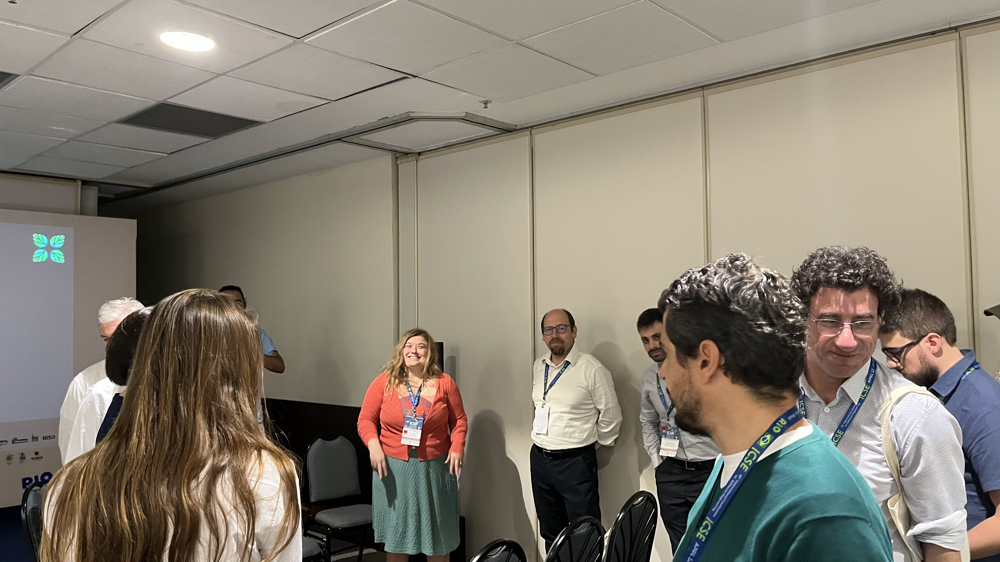
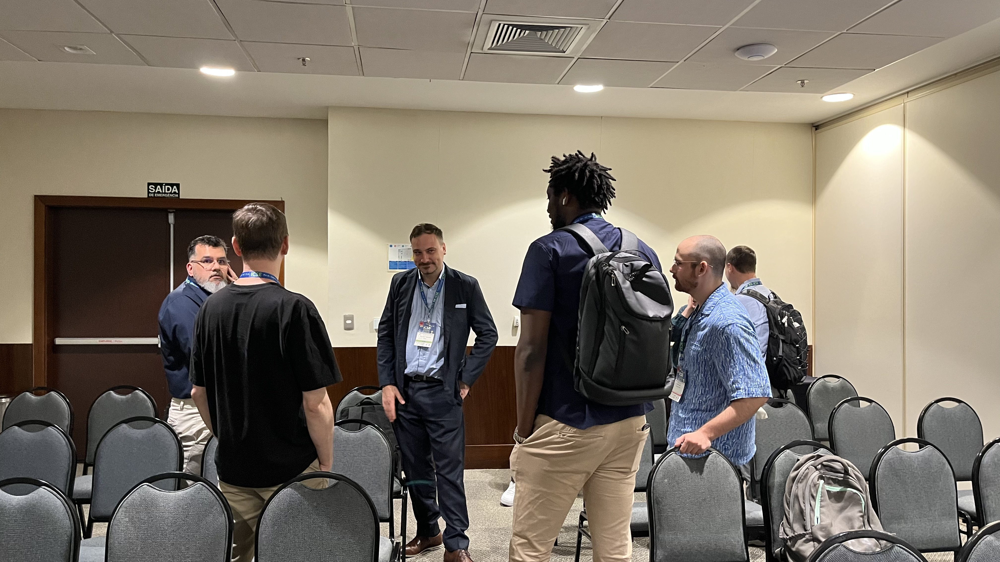
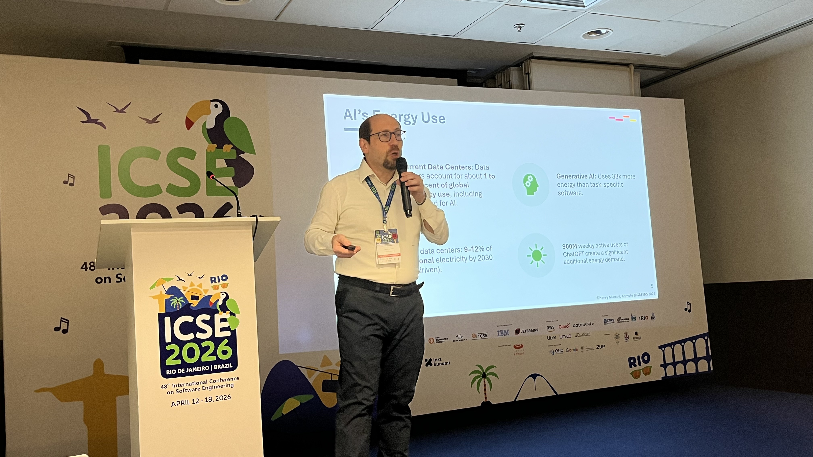
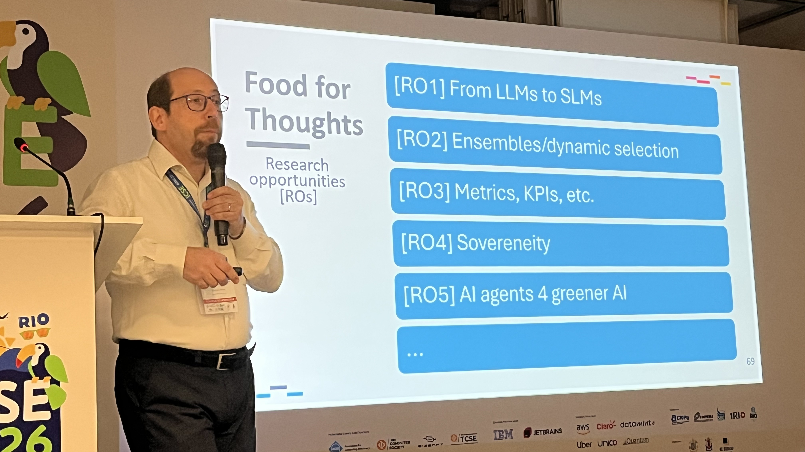
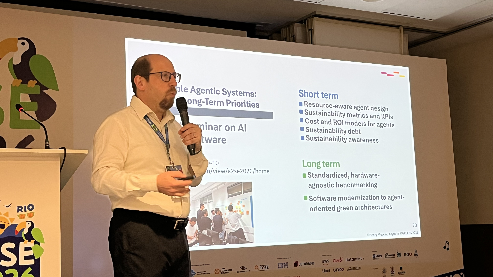
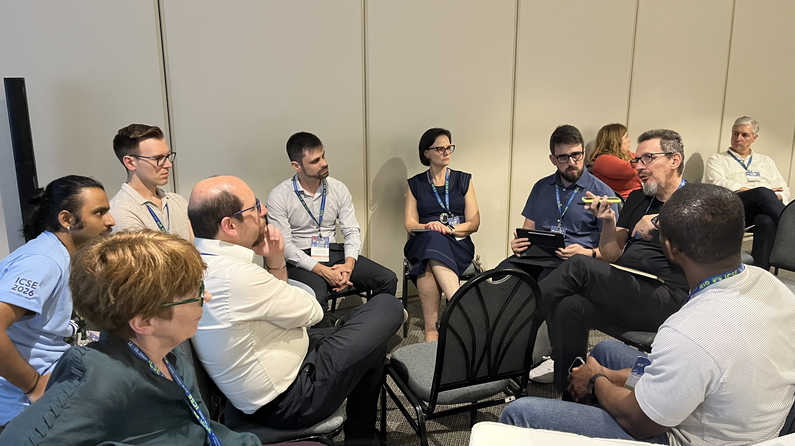
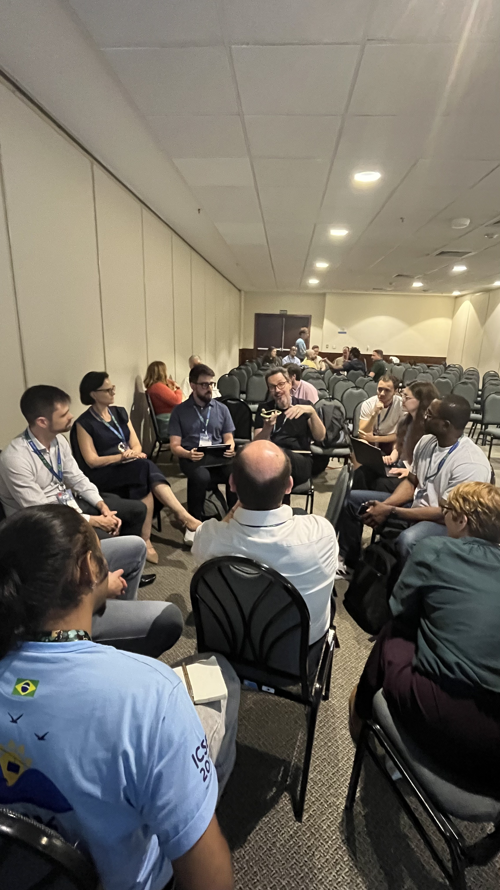
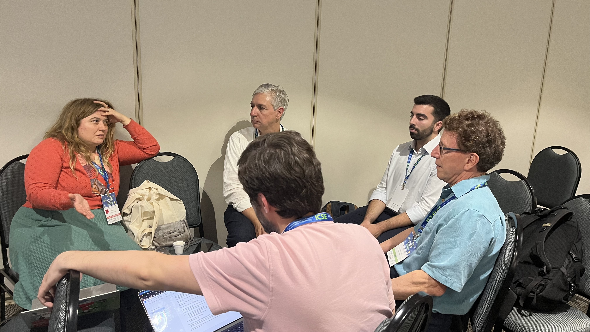
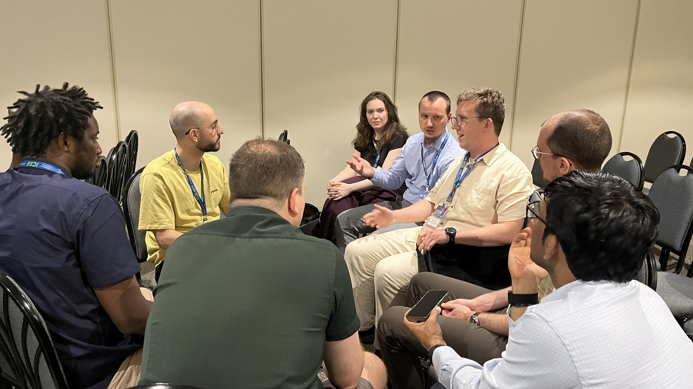
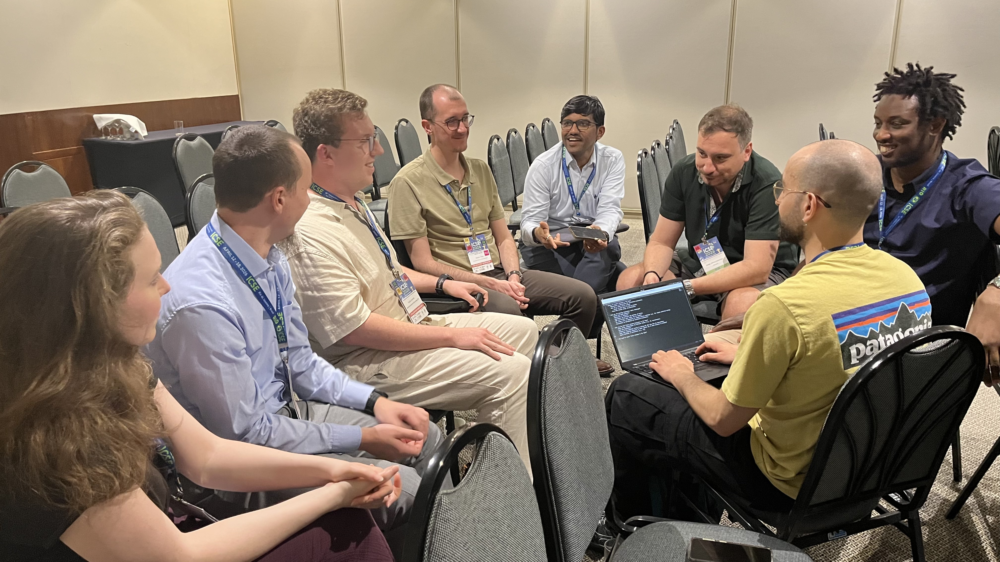
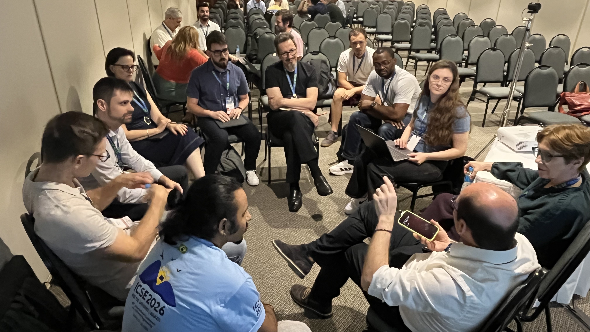
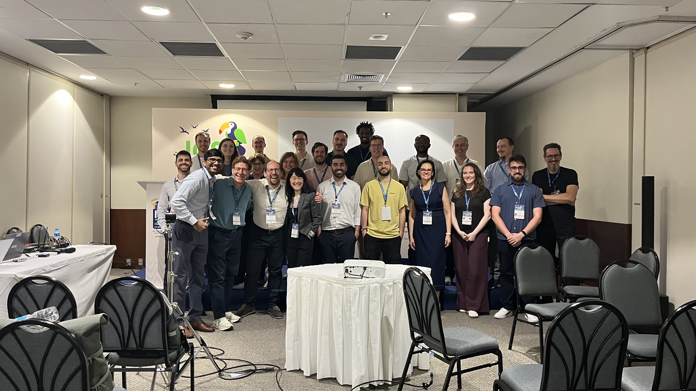
| 9:00-10:30 | Technical Session 1 | Workshop opening / Pitch Session 1 |
|---|---|---|
| 9:00 - 9:05 |
Workshop opening Session chairs: Rick Kazman, Karthik Vaidhyanathan, and Elisa Yumi Nakagawa |
|
| 9:05 - 10:30 |
Pitch Session 1 (5-minute pitch of each paper) Session chair: Karthik Vaidhyanathan Pitch 1: Integrating Green Software Practices into Scrum: A Catalog of Measures and Systemic Challenges A. Gidionova; T. Jordine Pitch 2: Making Sustainability Visible in Agile Practices: A Vision for Team‑Level Design Decision‑Making M. Adil; P. Gregory Pitch 3: Energy Consumption of Dataframe Libraries for End‑to‑End Deep Learning Pipelines - A Comparative Analysis P. Kumar; A. Imran; T. Kosar Pitch 4: CHAINS - Collaborative Hub for Advancing Innovative and Sustainable Software Supply Chains G. Sunyé; M. Eler; D. Cordeiro; T. Le Calvar; V. R. Carvalho; F. K. G. Amorim; M. Morandini Pitch 5: Towards a Taxonomy of Sustainability Requirements for Software Design M. Roy; N. Deb; N. Chaki; A. Cortesi Pitch 6: Integration of Green Coding into Management Frameworks - An Integration Outlook D. Junger; V. Wohlgemuth Pitch 7: The Impacts of Artificial Intelligence throughout the Software Development Life‑cycle on Sustainability: A Mixed‑method Study F. Iqbal; M.A. Khan; O. Weerakoon; S. Oyedeji; J. Porras Pitch 8: A Study on the Energy Efficiency of an Autonomous Rover A. Mihu; I. Malavolta Pitch 9: Learning to Be Green: A Reinforcement Learning Agent for Sustainable Microservice Allocation in Cloud Computing C. Costa; A. Trajano; V. Ferreira; V. Estevam; M. Paixao Pitch 10: Injecting Sustainability in Software Architecture: A Rapid Review M. Funke; P. Lago Pitch 11: Exploring the Use of Generative AI for Sustainable Software Requirements Elicitation V.T. Bathala; J. Gross; S. Ouhbi Pitch 12: Transpiling with LLMs for Energy Efficiency J.P. Fernandes; A. Chasmawala; B. Zlenko; M. Kassab Pitch 13: An Empirical Study of Energy Efficiency Monitoring for Complex Container‑Based Systems A. Koufakis; C. Poetoehena; T. van Engers; A.M. Oprescu Pitch 14: On the Relation Between Technical and Environmental Sustainability - A Systematic Literature Review J.B.G. Polo; C. Tessa; P. Avgeriou Pitch 15: Not All Local LLMs Are Equal: A Benchmark of Energy and Performance S. Cunha; F. Ribeiro; L. Cruz; J. Saraiva |
|
| 10:30-11:00 | Coffee break | |
| 11:00-12:30 | Technical Session 2 |
Pitch Session 2 (5-minute pitch of each paper) Session chair: Elisa Yumi Nakagawa Pitch 16: The Impact of External Libraries on Software Energy Efficiency and Sustainability N. Chaudhry; S.K. Lawal; S. Oyedeji Pitch 17: Beyond Energy Consumption: Accurate Emission Factors for Production Sites J. Jung; P.O. Antonino; T. Kuhn Pitch 18: Can We Measure What We Ignore? Rethinking the Individual Dimension of Software Sustainability in Digital Health J.S. Herbert; L.R.E. da Silva; M.F. Franco; I.C.S. da Silva Pitch 19: Operationalizing Sustainability through Non‑Functional Requirements: A Domain‑Oriented Model for Biomedical Software L.R.E. da Silva; M.A.G. de O. Maia; J. Herbert Pitch 20: METRION: A Framework for Accurate Software Energy Measurement B. Weigell; S. Hornung; B. Bauer Pitch 21: Software Library Energy Meter (SLEM): An Automated Energy Measurement Tool for Software Libraries Akilesh P; Shivadharshan S.; R. Chattaraj; S. Chimalakonda; V.S. Sharma; V. Kaulgud Pitch 22: Integrating API Energy Profiling into Developer Workflows: The VerdeFlow Prototype M.B. Joof; A. Khan; S. Oyedeji; J. Porras Pitch 23: Bridging the gap between industry and academia: sustainability in LLM‑assisted software engineering M. Kirkeby; P. de Reus; A.-M. Oprescu; K. Pronk; Q. Zhao; F. Castor; J.P. Fernandes Pitch 24: Graphical Interface Model for Empowering Web Application Users to Make Sustainable Choices: a Technology Acceptance Study G.M. Bonazzi; J. Ammendola; E. Guerra |
| 12:00-12:30 | Breakout participants into groups for discussing 3~4 topics | |
| 12:30-14:00 | Lunch | |
| 14:00-15:30 | Technical Session 3 |
Keynote Session chairs: Rick Kazman |
| 14:00 - 15:30 |
Keynote: Henry Muccini (University of L'Aquila,
Italy) Title: Green AI: From Industry Apathy to Architectural Opportunity Abstract: As Artificial Intelligence (AI) becomes a foundational layer in modern software, the discipline of Green Software Engineering must expand its focus from model optimization to systemic architectural efficiency. This presentation discusses a three-tiered hierarchy of AI sustainability, characterizing the transition from model-bound energy consumption to the emergent, architecture-driven overhead of LLM agents. We begin by examining the broad landscape of Green AI, distinguishing between the inherent energy demands of AI components and the external role of AI as a tool for reducing the energy consumption of traditional software applications. We then transition to a technical analysis of Large Language Model (LLM) inference, where energy expenditure remains largely decoupled from software architecture. The core of our analysis addresses the emergent paradigm of Agentic AI systems. We argue that at this level, energy consumption becomes a highly architectural concern. Unlike standard LLMs, agents rely on iterative reasoning loops and tool-calling mechanisms that necessitate a "Shift Left" approach in the design phase. We investigate, among other factors, the impact of token management and the strategic deployment of Small Language Models. Finally, we present preliminary empirical evidence from a multi-faceted study—comprising a Systematic Literature Review (SLR), practitioner interviews, and an analysis of open-source repositories. Our findings reveal a significant "awareness gap": while the technical complexity of agents grows, industry practitioners currently prioritize speed and cost savings over sustainability. We conclude by identifying research opportunities and establishing energy efficiency as a first-class citizen in autonomous agent design. Short Bio: I am a Professor of Software Engineering at the University of L’Aquila, Italy, where I lead the FrAmeLab research laboratory, part of the SWEN software engineering research group. My work operates at the critical intersection of software architecture, AI engineering, and sustainable ICT. With over two decades of contributions to the software architecture community, my current research focuses on the systemic architectural efficiency of AI-driven systems. I am specifically investigating the transition from model-centric energy consumption to the complex, architecture-driven overhead inherent in LLM-based agentic systems. Through empirical methods—including systematic literature reviews and repository mining—his team is defining the "Shift Left" patterns required to bridge the current industry awareness gap in AI sustainability. My commitment to the research community is reflected in my service as Chair of the Steering Committee for the IEEE International Conference on Software Architecture (ICSA) and as a member of the Steering Committee for the European Conference on Software Architecture (ECSA) and the Conference on AI Engineering (CAIN). As Associate Editor-in-Chief of IEEE Software, I provide my contribution to the peer-review and dissemination of research that may have an impact on industrial practices. Since 2019, my work has focused on bridging the gap among software architecture, machine learning, and sustainability through participation in international workshops, Dagstuhl seminars, and specialized publications. I earned my Ph.D. in Computer Science from the University of Rome “La Sapienza,” followed by a postdoctoral fellowship at the University of California, Irvine |
|
| 15:30-16:00 | Coffee break | |
| 16:00-17:30 | Technical Session 4 | Discussion, Presentation of results, and Closing session |
| 16:00 - 17:00 | Breakout participants into groups for discussing 3~4 topics (Continuation) | |
| 17:00 - 17:20 | Presentation of resulting discussions | |
| 17:20 - 17:30 |
Closing session Session chairs: Rick Kazman, Karthik Vaidhyanathan, Elisa Yumi Nakagawa |
|
| 19:00 | Social event |
Participants are invited to submit three types of contributions:
All papers must be submitted electronically via the
HotCRP submission system
by the submission deadline and must not have been published before or be
submitted for review elsewhere while under consideration at GREENS. All
submissions must be in PDF format and conform, at time of submission, to the
official
“ACM Primary Article Template”, which can be obtained from the ACM Proceedings Template page. LaTeX users
should use the sigconf option, as well as the review (to produce line
numbers for easy reference by the reviewers). To that end, the following
LaTeX code can be placed at the start of the LaTeX document:
\documentclass[sigconf,review]{acmart}.
Submissions must strictly conform to the ACM conference proceedings
formatting instructions specified above. Alterations of spacing, font size,
and other changes that deviate from the instructions may result in desk
rejection without further review. All papers will go through a
single blind submission process and will be reviewed on the basis of
technical quality, relevance, significance, and clarity by the program
committee members. The workshop proceedings will be published in ICSE 2026
Companion proceedings.